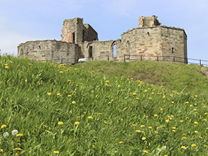
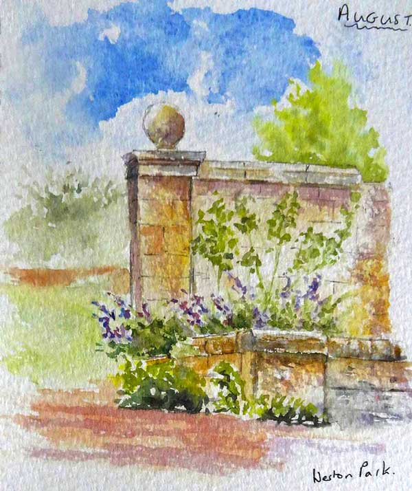

These very enjoyable events are held during the summer months in beautiful
locations in Staffordshire and Derbyshire. Each typically starts with a demonstration and general advice
on painting outside. After this, each person settles down with their own choice of subject to paint and
Rosemary is on hand to guide and encourage throughout the remainder of the day.
Meet at 10.30am. Finish about 4pm
There is a large car park on site.
This fascinating museum is worth a visit in its own right,
and we will be sketching the pot banks and many other subjects too. It’s a great place!
Price: £39 to include the admission
fee. Please bring your own art materials. Anything you are short of,
Rosemary will be able to help you out with. There is a café on site for refreshments.
This venue is not weather dependant as there are numerous spots indoors to set ourselves up.
Thursday 15th August Stafford Castle ST16 1DW
Meet at 10.30am in the car park.
Finish at about 4pm. This venue is
weather dependant.
Fee: £32. Please bring your own art
materials. Anything you are short of,
Rosemary will be
able to help you out with

Stafford Castle
From Rosemary’s sketchbook, a demonstration at Weston Park in August 2018:

Anything can go into your sketchbook including written notes, feathers and daubs of
mud. Well, that’s what Rosemary believes anyway! So on her outdoor painting days, you can feel free to
paint your own choice of subject using whatever style and method that suits you. Watercolour, graphite,
pastels, acrylics, ink….most of these find their way into Rosemary’s rucksack at some time during her
trips into the countryside. Her most favoured method, when wanting to quickly capture an image outside
uses watercolour paper, a soluble ink pen and water brush. These relatively cheap and portable materials
enable you to work at speed… and are especially useful if you are on the move, such as on holiday.
What does sketching mean? Sketching is a very loose term which covers all
manner of drawing and painting activities. For example, a sketch can be a simple line drawing done in
pencil or ink, or a more extensive watercolour image with pencil added later.
{kind=link}
.jpg){kind=link}
.JPG){kind=link}
{kind=link}
{kind=link}
{kind=link}